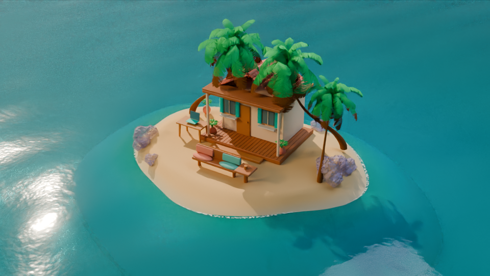
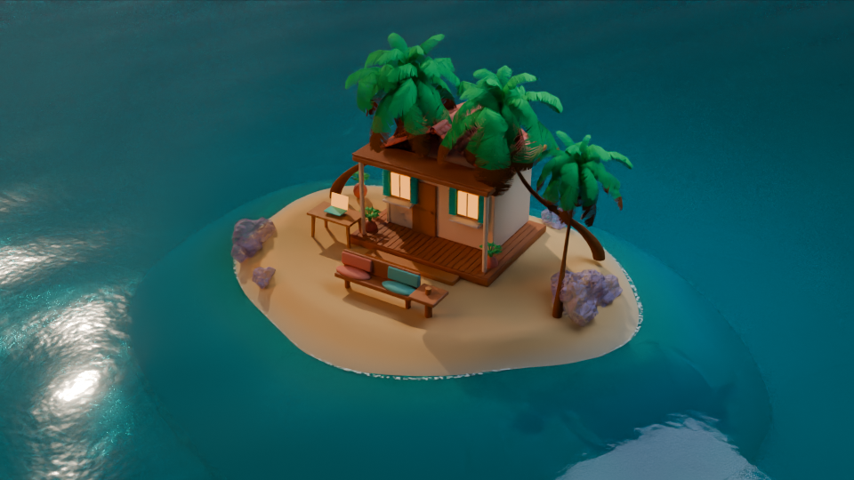
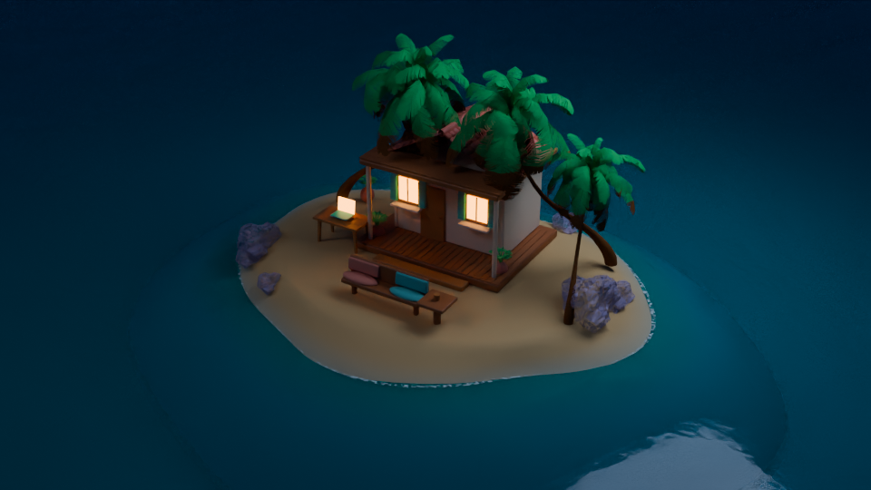
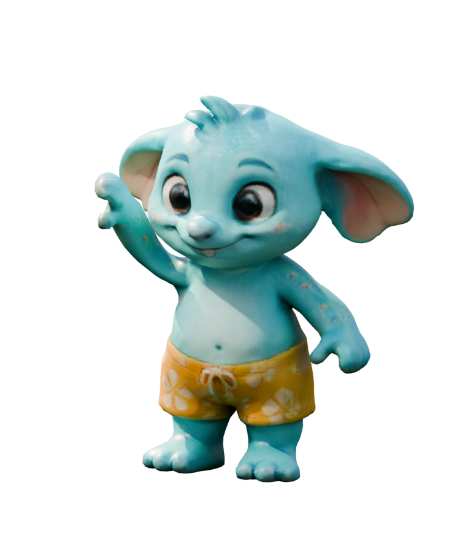

Казкова бірюзова лагуна · V6
Проба нової палітри у Blender: чисті зелені пальми, теплий пісок, м’ятні акценти, пастельні камені й м’якші тіні. Прозоре мілководдя та відбиття походять із 3D-сцени. Це окрема проба стилю; поточні шпалери ще використовують готові шари V5.
Кадр 1920 × 1080 із нового джерела resort-v6.blend.
Чорнова петля: 12 секунд, 30 кадрів/с, 480 × 270. Перед фінальним рендером перевіряємо рух і стик.
Pip залишається
 Перевірка нової посадки справжнім 3D-рендером. Pip збільшений, ноги перед краєм лавки, чашка в руці. У плеєрі додані окреме вставання, обхід меблів та анімовані рухи під час відпочинку.
Перевірка нової посадки справжнім 3D-рендером. Pip збільшений, ноги перед краєм лавки, чашка в руці. У плеєрі додані окреме вставання, обхід меблів та анімовані рухи під час відпочинку.
Перевірити нову посадку, вставання й обхід меблів → · денна вода в цьому плеєрі вже 1920 × 1080 / 30 fps. Решта освітлень ще рендериться.

Проба ранкового світла.
Проба вечора.
Ніч: м’яке місячне світло, теплі вікна й делікатне світіння відблисків, запечене у Blender.
 Текстурована 3D-модель, адаптований ріг.
Текстурована 3D-модель, адаптований ріг.
Той самий персонаж; для нового оточення перерендеримо його освітлення.Поточні шпалери → · Попередній перегляд Pip V5 →